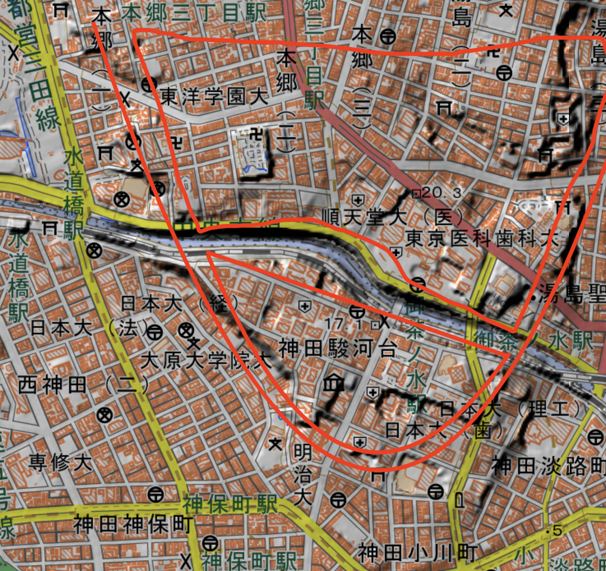

散歩
Under Constructin 散歩で行ったところの写真など。
東京散歩
- 神田川

- 神田川は大地を切り通して人工的にできた。江戸城を守るため。
- 神田川南側の神田駿河台は、江戸幕府が駿府の役人を住まわせたことが地名の由来。
- 神田川の部分は伊達はんにやらせた。だから仙台の名がついている。
- お茶の水はこの切り通しから綺麗な水が出て、献上するお茶が出たので、お茶の水の名がついた。
- 九段坂 昔は急な坂だったが今は削られて、車が通りやすいようになっているとのこと (ブラタモリ 6/26) 葛飾北斎 - くだんうしがふち https://bunka.nii.ac.jp/heritages/detail/456897
江戸城 -
- 桜田堀は土手をいかしている(石垣ではない)
- 低地に対して無理やり作った場合は脆いので石垣を作る必要がある。
日比谷入江の埋め立ては、大名に行わせた。 天下普請の一環。
参考: 参考: 江戸の土木アーカイブ